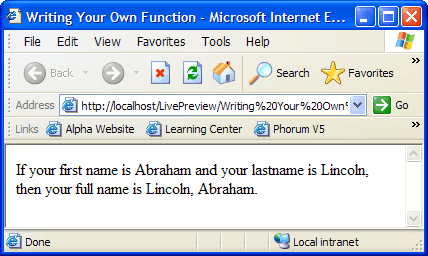
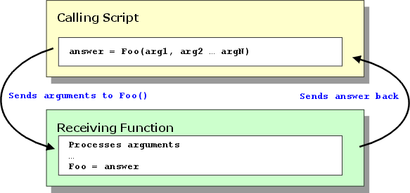
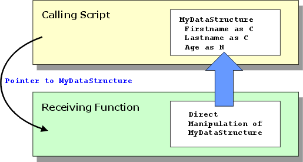

Writing Your Own Function
The following user defined function is a simple example to demonstrate a point. You can create a function that accepts parameters, processes these inputs according to your specifications, and returns a value that you can use in your page.
It is good programming practice to separate user defined functions from the HTML contents of the page. In this case we place the function before the opening <HTML> tag.
Create a new A5W page and name it "Writing Your Own Function".
Display the Source tab.
Enter the following text into the page.
<%a5 function fullname as C (cFirstname as C, cLastname as C) fullname = alltrim(cLastname) + ", " + alltrim(cFirstname) end function %> <html> <head> <meta name="generator" content="Alpha Five HTML Editor"> <title>Writing Your Own Function</title> </head> <body> <%a5 dim cFirstname as C = "Abraham" dim cLastname as C = "Lincoln" %> If your first name is <%a5 ? cFirstname%> and your lastname is <%a5 ? cLastname%> , then your full name is <%a5 ? fullname(cFirstname, cLastname) %> . </body> </html> |
When you run the page it should look like this.

Declaring the Types of Function Arguments
There is an assumption that a function has no prior knowledge of the data types of the arguments that are passed to it. as a result, it is necessary to include a parameter list in a function declaration. A function can have no arguments, one argument, or many arguments. The following examples pass their arguments by value, which means that the receiving function has no knowledge of the variables in the calling function.
FUNCTION FunctionName1() ... do stuff END FUNCTION FUNCTION FunctionName2(argument1 as TypeSymbol) ... do stuff END FUNCTION FUNCTION FunctionName3(argument1 as TypeSymbol, argument2 as TypeSymbol, ... argumentN as TypeSymbol) ... do stuff END FUNCTION |
Alpha Anywhere allows you to pass parameters by reference, using the keyword BYREF. This means that the receiving function can directly manipulate the variables passed by the calling function.
FUNCTION FunctionName1() ... do stuff END FUNCTION FUNCTION FunctionName2(BYREF argument1 as TypeSymbol) ... do stuff END FUNCTION FUNCTION FunctionName3(BYREF argument1 as TypeSymbol, BYREF argument2 as TypeSymbol, ... BYREF argumentN as TypeSymbol) ... do stuff END FUNCTION |
The TypeSymbol will be a single character from this list.
Type Symbol | Type Name | |
A | V5 | Any |
B | V5 | |
C | V5 | |
D | V5 | |
E | V6 | Exponent Numeric |
F | V5 | |
L | V5 | Logical |
N | V5 | Numeric |
P | V5 | |
T | V5 | |
U | V5 | |
Y | V6 |
Declaring the Type of the Return Value
If a function returns a value, it can return only a single variable. Note how the value is returned by assigning it to the name of the receiving function.

FUNCTION FunctionName1 as N () ... do stuff FunctionName1 = 24 END FUNCTION FUNCTION FunctionName2 as C (argument1 as TypeSymbol) ... do stuff FunctionName2 = "George" END FUNCTION FUNCTION FunctionName3 as L (argument1 as TypeSymbol, argument2 as TypeSymbol, ... argumentN as TypeSymbol) ... do stuff FunctionName3 = .T. END FUNCTION |
A function does not have to return a value. If a function does not return a value, the following syntax applies. The "V" type symbol means "void" or "nothing".
FUNCTION FunctionName1 as V () ... do stuff END FUNCTION FUNCTION FunctionName2 as V (argument1 as TypeSymbol) ... do stuff END FUNCTION FUNCTION FunctionName3 as V (argument1 as TypeSymbol, argument2 as TypeSymbol, ... argumentN as TypeSymbol) ... do stuff END FUNCTION |
Returning Multiple Values from a Function
The "normal" situation, as illustrated above, returns a single value of a single type. However, it possible to return multiple variables from a function. One scenario is as follows:
the calling function creates a data structure that contains multiple variables (a dot variable or an array )
the calling function sends a pointer to the data structure to the receiving function
the receiving function manipulates the variables in the data structure

The following sample code in the calling script or function illustrates how this might be done.
dim mds as P dim mds.firstname as C dim mds.lastname as C dim mds.age as N mds.firstname = "George" mds.lastname = "Washington" mds.age = 35 FunctionName(mds) |
The receiving function would have code like this. Note that it can reference the mds data structure without actually knowing its true name. Note also that FunctionName does not have to do anything to return the changes to the variables.
FUNCTION FunctionName as V (abc as P) abc.firstname = "Abraham" abc.lastname = "Lincoln" abc.age = 29 END FUNCTION |
See Also